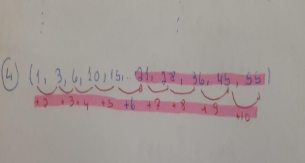

INSTITUTO FEDERAL DE EDUCAÇÃO, CIÊNCIA E TECNOLOGIA DO RIO GRANDE DO SUL – IFRS
CAMPUS ERECHIM
CURSO TÉCNICO EM INFORMÁTICA
PORTFÓLIO DO TERCEIRO TRIMESTRE
Disciplina: Matemática
Professora: Valéria Espíndola Lessa
Aluno: Eduardo Brondani
1. Introdução
Meu portfólio contém as atividades vistas e realizadas no 3º trimestre que incluem: Matemática Financeira, Progressões,
Estatística Básica e entregas de trabalhos referente aos conteúdos apresentados,
falarei um pouco mais sobre cada um dos itens escolhidos no capítulo que segue.
2. DESENVOLVIMENTO
2.1 Matemática Financeira
Esse sistema de matemática financeira tem por objetivo estudar a evolução do valor do dinheiro ao longo do tempo,
ela conpoe coceitos basicos como: capital inicial, principal ou valores presente, prazo, juro, taxa de juros, montante ou valor futuro,
regime de capitalização, e capitalização simples, ela é usada muito no nosso cotidiano.
Exe: Sabendo-se que certo capital, aplicado durante 10 semestre, a taxa de 18% ao semetre rende R 72.000,00 de juros, determinar o montante.
EX:
Conforme foto anexa da atividade, devo fazer o cálculo usando a fórmula para cada situação.
Para o meu melhor aprendizado procurei assistir as aulas da professora Valéria, assisti alguns vídeos no Youtube.
2.2 Progressões
Dentro das progressões é estudada as sequências numéricas, progressão aritméticas, e progressão geométricas.
Progressão aritmética remete a um desenvolvimento gradual de um processo ou uma sucessão. Em matemática, dizemos
que esta sucessão é uma sequência. Podemos exemplificar algumas sequências conhecidas: Sequência das eleições para o Executivo a partir de 1994.
Progressão geométrica é uma sequência numérica que possui uma razão fixa q e, a partir do primeiro termo, os termos são cálculos pela razão q vezes o seu antecessor.
Ex:

Não gostei muito dessa atividade achei um pouco complicada, e pouco usada no nosso cotidiano, tive dificuldade
para entender mesmo usando os recursos de vídeos postados pela professora Valéria.
2.3 Estátistica Básica
Na estatística básica é estuda tabelas de distribuição de frequências, gráficos,
medidas de posição ou tendência central, medidas de dispersão e uso de planilhas eletrônicas, usamos para situações
no campo da matemática que relaciona fatos e números em que há um conjunto de métodos que nos possibilita coletar dados
e analisá-los, assim sendo possível realizar alguma interpretação deles.
Ex:
Essa atividade achei muito complicada busquei assistir vídeos no Youtube, da professora Valéria e pedi ajuda da minha antiga professora.
3. AUTO AVALIAÇÃO
Neste trimestre foi bem difícil para min realizar os exercícios dados, busquei de várias formas tentar aprender, e compreender
assistindo todas as vídeo aulas da professora, assistindo também aos vídeos disponíveis sobre os conteúdos no Youtube, lendo as apostilas
e estudando com o auxílio de vários recursos possíveis. Fiz aulas particulares para tentar aprofundar os conhecimentos e poder praticar
mais alguns conteúdos. Procurei desenvolver todas as atividades propostas com o maior esforço possível, para min as aulas presenciais
facilitaria minha concentração e compreensão dos conteúdos. Analisando o meu esforço, o tempo que dediquei ao estudo da disciplina,
os caminhos e recursos que busquei para entender os conteúdos e pelos trabalhos e atividades realizadas me daria um 8,5.
4. AVALIAÇÃO DA PROPOSTA
Quanto ao portfólio eu achei uma ideia legal, achei esse trimestre mais tranquilo em faze-lo mas não vejo necessidade de fazer uma
justificativa para cada item. Poderia ser colocado uma única justificativa dos itens abordados no trimestre no final de todos os
itens. Minha sugestão seria fazermos juntos, em aula síncrona com a professora, a correção dos exercícios onde tiraríamos nossas
dúvidas, até por que muitas vezes a dúvida de um colega pode ser a dúvida de outros alunos da turma.